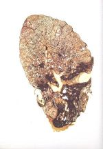
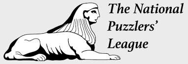
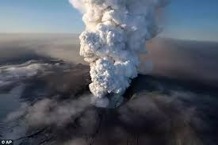

Pneumonoultramicroscopicsilicovolcanoconiosis is the longest word in the english language; originally created in 1935 by the president of the National Puzzlers league. The word is considered an invented word and despite appearing in most dictionaries is technically not a real word and actually just a combination of several latin terms but it is still considered the longest word in the enlgish language by most official standards.
It is often refered to as a synonym for silicosis but is actually only a very rare form of silicosis caused by inhaling volcanic dust. Silicosis is more specifically a form of lung disease caused by inhaling crystaline silica dust marked by inflammation and scarring in the upper lobes of the lungs. Pneumonoultramicroscopicsilicovolcanoconiosis is a type of this disease caused most directly by inhaling volcanic dust. Probably one of the main reasons that Pneumonoultramicroscopicsilicovolcanoconiosis is not considered a word is because it is a form of silicosis which is a form of pneumoconiosis meaning the inclusion of Pneumo in the front half and coniosis in the back half of the word are completely unecessary because silico is already present in the word to draw its connnection to the root lung diseases.
  Visit Pneumonoultramicroscopicsilicovolcanoconiosis's Wikipedia Page for more information